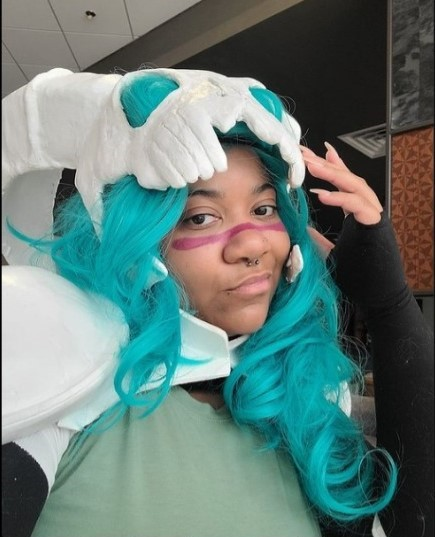

Malika Madison
The best way to get to know me outside of work is to ask me about my hobbies!
Tennis
I enjoy some casual tennis play when I can. I think the best time to play is in the fall when it gets nice and cool after work. It's a great way to be active and keep your blood pumping. Plus it's a bit strategic so it works the mind as well. It's also fun to watch, I particularly have my eyes on Coco Gauff, the current US Open Women's Champion.
Cosplay
You're looking at the 2022 Dreamcon cosplay contest winner here! I've been cosplaying since my early days, yes I count Halloween in that category. I didn't get serious about going to cons and doing it until 2013 and have been going consecutively since 2019. Checkout the winning cosplay though.

Knitting
Want a great way to pass the time? Give knitting a try. It's fairly easy to learn, most patterns call for 2 types of stitches and it's very begginer friendly. Between knitting and crochet, I'll always pick the former.